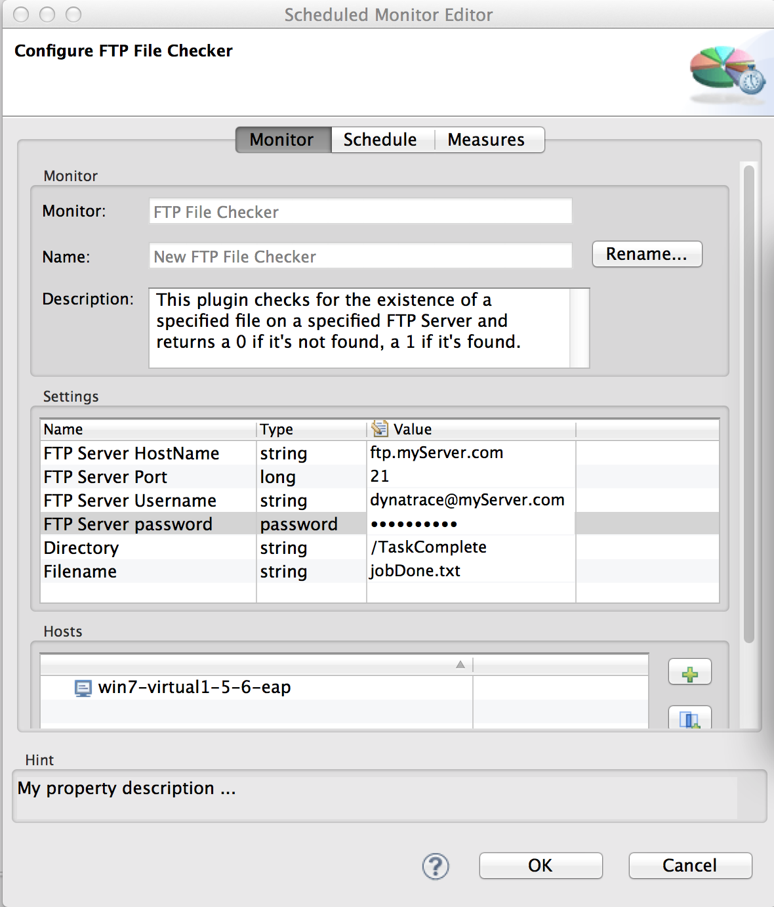

FTP File Checker Plugin
Table of Contents (Start)
FTP File Checker Plugin
Overview
This plugin checks the existence of a given file on an FTP Server and returns the result as a measure value of 0 or 1.
Plugin Details
|
Plug-In Files |
|
|
Author |
Joe Hoffman |
|
dynaTrace Versions |
5.5+ |
|
License |
|
|
Support |
|
|
Release History |
Dec 16, 2013. v1.0.1 - Initial Release Dec 18, 2013, v1.0.2 - Better error handling, compiled for v5.5 |
Provided Measures
|
Measure |
Description |
|
FileExists |
1; if the specified file is found on the FTP Server 0; if the specified file is not found |
Screenshot of the measures screen

Configuration
The following properties need to be defined when setting up this monitor
|
Property Name |
Type |
Default Value |
Notes |
|
FTP Server Hostname |
String |
localhost |
hostname or IP address |
|
FTP Server Port |
Long |
21 |
changing this to 22 will not invoke SSL. SSL is currently not supported by this plugin but could easily be added. |
|
FTP Server Username |
String |
|
|
|
FTP Server Password |
String |
|
|
|
Directory |
String |
/ |
If left blank, the filename is checked in the default login directory. To check on the file located in the foo directory, this field would contain /foo. |
|
Filename |
String |
fileToCheck.txt |
|
Screenshot of the Configuration page

Usage Example
This plugin can be useful for detecting when a given file does or does not exist on a file system that is accessible by FTP. This can be useful when a file existence or absence is used as a trigger for the beginning or completion of a batch job. The resulting measure can be plotted, displayed as a Traffic Light, and alerted upon via an action. Below is an example of showing the status of the file and showing an alert condition via a Traffic light when the file is not found.

Installation
Import the Plugin into the dynaTrace Server via the dynaTrace Server Settings menu -> Plugins -> Install Plugin. For details how to do this please refer to the dynaTrace documentation: